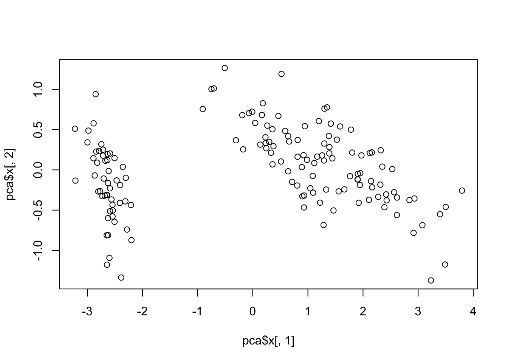
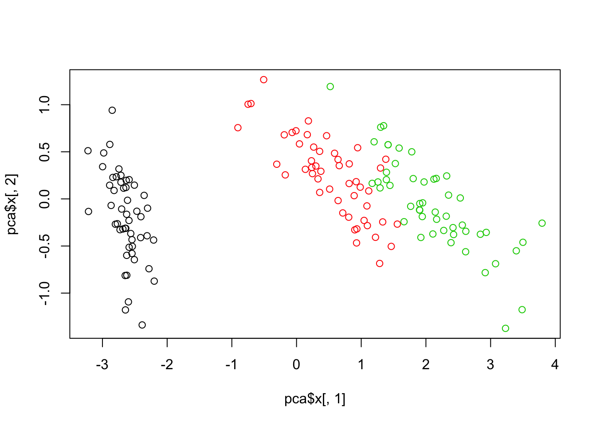
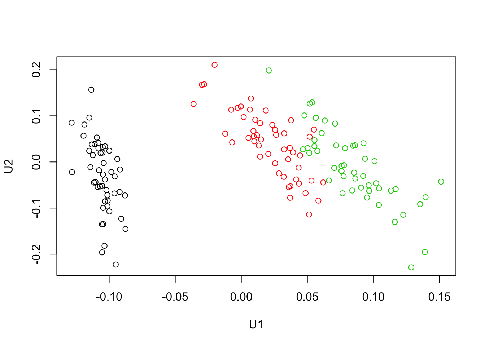

Analyse en composante principale et décomposition en valeurs singulières
1 Introduction
Une explication intuitive de l’analyse en compostante princiaple est donnée en image dans l’article de wikipédia :

ACP sur un poisson
La théorie derrière est liée à la décomposition en valeur singulière illustrée ici pour la compressin d’image.
On va montrer le lien avec avec les différentes de R.
2 Analyse en composantes principales
Avec la fonction pca, on peut faire l’analyse en composantes principales :
Pour voir ce qu’il y a dans les résultats de l’analyse, on peut afficher les objets :
## List of 5
## $ sdev : num [1:4] 2.056 0.493 0.28 0.154
## $ rotation: num [1:4, 1:4] 0.3614 -0.0845 0.8567 0.3583 -0.6566 ...
## ..- attr(*, "dimnames")=List of 2
## .. ..$ : chr [1:4] "Sepal.Length" "Sepal.Width" "Petal.Length" "Petal.Width"
## .. ..$ : chr [1:4] "PC1" "PC2" "PC3" "PC4"
## $ center : Named num [1:4] 5.84 3.06 3.76 1.2
## ..- attr(*, "names")= chr [1:4] "Sepal.Length" "Sepal.Width" "Petal.Length" "Petal.Width"
## $ scale : logi FALSE
## $ x : num [1:150, 1:4] -2.68 -2.71 -2.89 -2.75 -2.73 ...
## ..- attr(*, "dimnames")=List of 2
## .. ..$ : NULL
## .. ..$ : chr [1:4] "PC1" "PC2" "PC3" "PC4"
## - attr(*, "class")= chr "prcomp"Ainsi, comme on a souvent l’habitude, on peut afficher les données projetées sur les 2 premières directions principales :

Il est à noter que les points sont projetés indépendamment de leurs classes. S’il y a des relations particulières entre les caractéristiques des variables et les classes, on pourrait voir que grâce à l’analyse en composantes princiaples, les projections permettent de mieux distinguer les classes sur les 2 premières directions principales :

Cela permet ainsi la réduction de dimension. En effet, on peut visuellement distinguer deux frontières selon l’axe 1 pour distinguer les trois classes.
3 Décomposition en valeurs singulières
Si on réalise une décomposition en valeur singulières sur les données centrées, on verra que les résultats sont équivalents à l’analyse en composantes principales :
## List of 3
## $ d: num [1:4] 25.1 6.01 3.41 1.88
## $ u: num [1:150, 1:4] -0.107 -0.108 -0.115 -0.109 -0.109 ...
## $ v: num [1:4, 1:4] 0.3614 -0.0845 0.8567 0.3583 -0.6566 ...Dans U, on trouve les mêmes projections X :

Dans V, on trouve la matrice de rotation :
## [,1] [,2] [,3] [,4]
## [1,] 0.36138659 -0.65658877 0.58202985 0.3154872
## [2,] -0.08452251 -0.73016143 -0.59791083 -0.3197231
## [3,] 0.85667061 0.17337266 -0.07623608 -0.4798390
## [4,] 0.35828920 0.07548102 -0.54583143 0.7536574## PC1 PC2 PC3 PC4
## Sepal.Length 0.36138659 -0.65658877 0.58202985 0.3154872
## Sepal.Width -0.08452251 -0.73016143 -0.59791083 -0.3197231
## Petal.Length 0.85667061 0.17337266 -0.07623608 -0.4798390
## Petal.Width 0.35828920 0.07548102 -0.54583143 0.7536574Les écarts-types dans l’ACP sont proportionnels aux valeurs singulières :
## [1] 12.20656 12.20656 12.20656 12.20656Le coefficient de proportionnalité vient du fait que l’estimateur de la variance dans l’ACP est un estimateur non-biaisé, avec le facteur 1/(nrow(iris)-1).
## [1] 149 149 149 149Copyright © 2016 Blog de Kezhan Shi